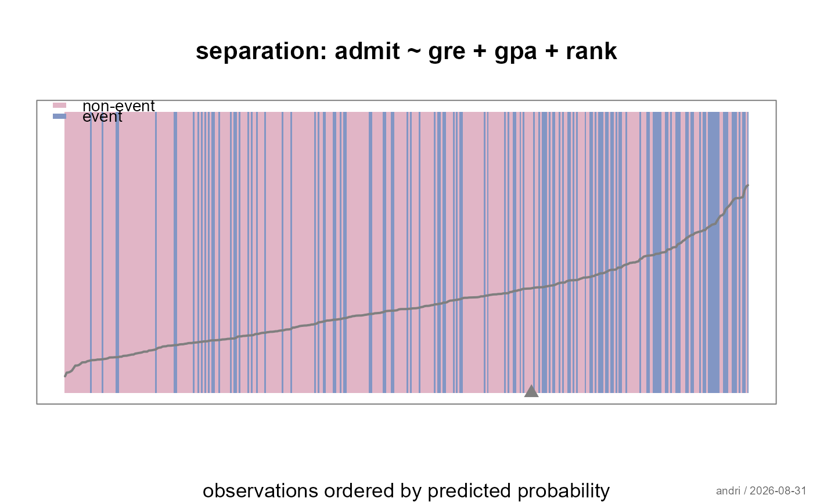

Draws one thin vertical line per observation, ordered by predicted probability and coloured by the observed outcome. A model that separates the classes shows the events collected on the right; one that does not shows them evenly mixed. The whole sample fits in a single strip, which makes it a compact companion to a numeric summary such as the c statistic.
Usage
plotSeparation(
x,
main = NULL,
xlab = "observations ordered by predicted probability",
ylab = "",
col = .useTheme,
box = .useTheme,
line = TRUE,
expected = TRUE,
legend = TRUE,
stamp = .useTheme,
...
)Arguments
- x
a fitted logistic model of class
"FitMod"(fitted withfitfn = "logit") or a binomialglm.- main
main title.
NULL(default) derives one from the model formula;"",NAorFALSEsuppress it.- xlab, ylab
axis labels.
- col
colours for non-events and events, in that order.
.useTheme(default) resolves against the active theme.- box
plot box, following the flexible
TRUE/FALSE/NA/list()pattern.- line
the predicted probabilities drawn across the strip.
TRUE(default),FALSE, or a named list passed tolines.- expected
marker for the expected number of events.
TRUE(default),FALSE, or a named list passed topoints.- legend
legend for the two outcome colours.
TRUE(default),FALSE, or a named list passed tolegend.- stamp
corner stamp, passed to the graphics framework.
- ...
further graphical parameters passed to
par()via the internal framework.
Details
The plot answers a different question from
plotCalibration: separation is about the ordering
of the predictions, calibration about their level. A model can
rank perfectly and still predict risks twice too high, and the ROC
curve - being invariant to any monotone transformation of the
predictions - cannot see the difference either. Read the two plots
together.
The marker on the axis sits at the expected number of events, \(\sum \hat p_i\), counted from the right. If it lands where the observed events start, the model gets the overall event rate right.
References
Greenhill, B., Ward, M. D. and Sacks, A. (2011) The separation plot: a new visual method for evaluating the fit of binary models. American Journal of Political Science, 55(4), 991–1002.
See also
model-diagnostics-overview for an overview of the diagnostics for logistic models in alloy.
Examples
fitLogit <- fitMod(admit ~ gre + gpa + rank, Admit, fitfn = "logit")
plotSeparation(fitLogit)
